L'INVASION DES ÉMISSIONS ABUSIVES
L'INVASION DES ÉMISSIONS ABUSIVES
Victor MANTA, PWO (*)
Introduction
Nous publions les résultats de notre recherché sur internet contenant des informations sur les timbres abusifs émis par la Poste des Iles Solomon entre les années 2013 - 2015. Les résultats sont époustouflants, et le terme « invasion » du titre est pleinement justifié.
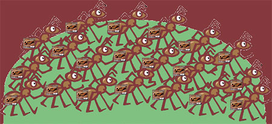
L'invasion des timbres abusives« Premier Sang » (**)
Curiosité finale, j'ai lu rapidement les nouveautés hebdomadaires – listing Scott du 21 septembre 2015. Aux pages 79 à 84, j'ai soudainement trouvé une énorme quantité de timbres émis par un et uniquement un pays, la petite Ile Solomon d'Océanie.
Intrigué par ce que j'avais vu, j'ai décidé de consacrer un peu de temps pour investiguer la philatélie listé dans le catalogue. Ci-après, les étonnants résultats de cette investigation.
Liste :
Feuillets de 4 blocs souvenirs (S/S) - Scott N° 1191 (15/02/2013) à N° 1765 (20/12/2014)
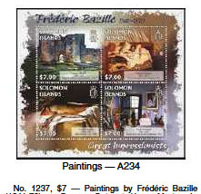
Fig. 1. Source : Catalogue Scott - Liste nouveautés du 21/09/2015Feuillets de 4 timbres, successivement
4 fois (23 + 24 + 12 +24 + 18 + 18 + 18 + 1 + 17 + 18 + 20 + 2 + 18 + 1 + 3 + 16 + 16 + 20 + 20) = 1156 timbres
Feuillets souvenirs, successivement
23 + 24 + 12 +24 + 18 + 18 + 18 + 1 + 17 + 18 + 20 + 2 + 18 + 1 + 3 + 16 + 16 + 20 + 20 = 289 feuillets
Feuillets de 9 timbres
5 x 9 = 45 timbres
La Poste de l'Ile Solomon a émis en moyenne 500 timbres et 150 feuilles différents par année, aussi bien en 2013 qu'en 2014, comme le catalogue Scott les a listé en 2015 !
(**) Titre inspiré du célèbre film avec Rambo
Les timbres des Iles Solomon sur le WNS
Le WNS est l'abréviation du système de numérotation WADP, développé par l'Association pour le Développement de la Philatélie (WADP) et l'Union Postale Universelle (UPU), et crée en 2002. Lien . Son but initial était de stopper la prolifération des timbres illégaux. Ce but n'a pas été atteint. En 2003, l'UPU a publié 8 circulaires concernant les émissions illégales, et au 3-ème semestre de 2015, déjà 7 circulaires. Source
Revenons aux émissions abusives. Au cours de l'année 2013, le nombre de 239 timbres (actuellement seulement ceux apparaissent sur les feuillets souvenirs) pour les Iles Solomon a été enregistré avec le WNS. Ceci est un grand changement de politique de la Société Stamperija (voir information ci-dessous) qui dans les années passées avait avisé ses partenaires, les administrations postales, d'être contre tout enregistrement.
A titre de comparaison, les USA ont enregistrés sur le WNS, en 2013, 140 timbres, et en 2014, 81 timbres
Pour les années 2014 et 2015, rien n'a été enregistré sur le WNS par les Iles Solomon (jusqu'a présent ?).
Exemple concret
La série “peintres impressionnistes” de 2013 des Iles Solomon. Elle est listée ici sur le WNS.
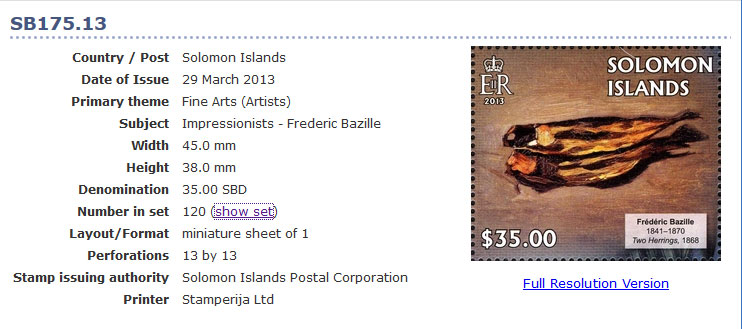
Fig. 2. Source : Site internet du WNS, le lien en dessusRésultats :
Les feuillets de 4 timbres ne sont pas enregistrés sur le WNS, ce qui explique la différence en nombre de timbres quand on compare avec la liste de Scott.
Ce gros ensemble de feuillets de 4 timbres (24) et de feuillets souvenirs (24 S/S) est évalué par Scott à 415 USD.
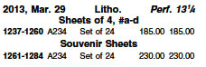
Fig. 3. Source : Mise à jour liste Scott du 21 septembre 2015Ceci est juste une des 14 - 15 séries émises en 2013 et 2014 par les Iles Solomon, mais les prix sont tous assez similaires.
Le code Ethique de la Philatélie en usage pour les pays membre de l'UPU
Il a été mis en place en 2008 et a été approuvé par tous les pays membres de l'UPU.
Quelques dispositions :
7.6 Dissocier les dispositions contractuelles entre les imprimeurs à qui sont confiés la fabrication des émissions et les intermédiaires chargés de la commercialisation de celles-ci ;
7.7 Confier l'impression des émissions uniquement à des imprimeurs garantissant la sécurité des timbres-poste et qui ont adhéré au code de déontologie élaboré à leur intention et qui ont été agréés en tant qu'imprimeurs garantissant la sécurité des timbres-poste ou qui se sont engagé à le faire.
Le code éthique de la philatélie peut être téléchargé ici
Imprimeurs certifiés sécurisés
• Code éthique pour des imprimeurs sécurises. Lien
• Imprimeurs sécurisés - liste des imprimeurs certifiés.
La relation entre le site internet de la Poste des Iles Solomon et le site du vendeur Stampérija.
Les timbres qui ne respectent pas les dispositions ci-avant ne sont pas vendus par le Service Philatélique mais par des agences ou des compagnies privées, souvent localisées en dehors du pays concerné.
Les Iles Solomon n'est pas une exception. Sur leur site internet, pour acheter les timbres émis depuis 2012, les acheteurs potentiels sont directement dirigés sur le site de Stamperija. Après avoir découvert l'important nombre de timbres émisses si rapidement, la découverte que leur agent est la bien connue société lithuanienne Stamperija fut notre seconde grande surprise !
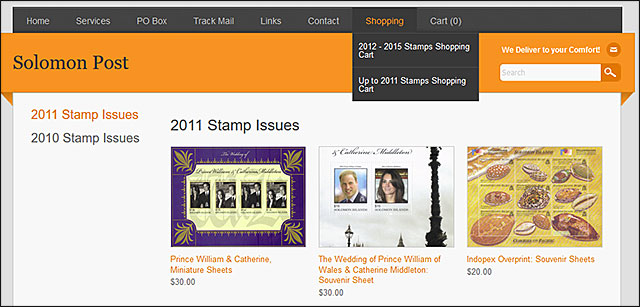
Fig. 4. Source : site internet des Iles SolomonLe lien depuis le site internet de la Poste des Iles Solomon vers le site internet de Stamperija (leur négociant en timbres, localisé en Lithuanie) est ici .
Les peintures de F. Basille sur les feuillets des Iles Solomon sont évidemment en vente sur le site de Stamperija (ceci est juste un exemple). L'image ci-après peut être trouvée ici .
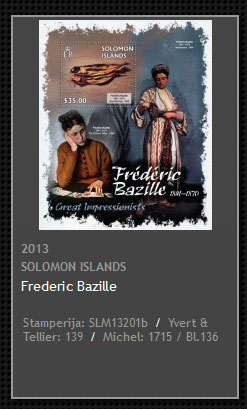
Fig. 5. Source : Site internet de Stamperija (lien ci-avant)Stamperija est aussi un imprimeur
La société Stamperija est aussi un imprimeur, comme mentionné par exemple ici
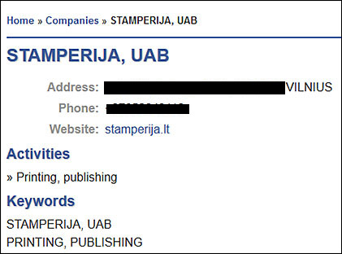
Fig. 6. Donnés sur Stamperija. La source : via le lien ci-avantNous constatons qu'il n'est pas certifié comme un imprimeur de sécurité car il ne figure pas dans la liste des imprimeurs certifiés mentionnée avant.
Son rôle comme imprimeur des timbres des Iles Solomon est sans doutés, parce qu'il est clairement mentionné sur le site du WNS, par exemple ici (voir aussi la première image de cette page)
« Autorité pour les émissions de timbres : Corporation postale des Iles Solomon »
Imprimeur : Société Stamperija lien
Comment est-ce possible que La Poste des Iles Solomon et leur revendeur et imprimeur simultané soit conforme avec les articles 7.6 et 7.7 de code d'éthique mentionné ci-avant ? Impossible !
Quelques informations sur les Iles Solomon
Les Iles Solomon, une ancienne colonie britannique dans le Pacifique, essaient de sortir d'un conflit qui les a conduits au bord de l'effondrement. La Banque Mondiale dit que les Iles Solomon, un des pays les plus pauvres du Pacifique, a été touché par des crises successives de la nourriture, du pétrole et de la finance.
Fig. 6. Vue aérienne des Iles Solomon. Source : Wikipedia. Auteur : Jim LounsburyOn peut s'interroger pourquoi les 600 000 habitants des Iles Solomon auraient besoin de 500 timbres et 150 feuillets souvenirs chaque année ? Puisqu'eux n'en ont pas le besoin et pour cette raison ne les utilise pas, nous pouvons interpréter qu'ils ont simplement étés émisses pour ponctionner les collectionneurs les moins informés ou les plus naïfs du monde entier.
Parce qu'ils violent les règles de l'UPU, ils tombent dans la catégorie des Prohibés, dans la sous-catégorie timbres Abusifs, comme les a défini la Commission de Lutte contre des Faux et Contrefaçons de la Fédération Internationale de la Philatélie (FIP). Lien
Actualisation pour les Îles Salomon 2016
De la part du Scott New Listings Update, August 15, 2016, LINNS.com, pages 82 - 84 , le 15 Août , 2016, LINNS.com , pages 82 - 84 , nous apprenons qu'en 2015 Stamperija a émis pour les Îles Salomon les feuilles de souvenirs de quatre timbres numérotés 1770 à 1974. Cela signifie que plus de 200 feuilles différentes de quatre, ou 800 timbres différents , ont été émis seulement en 2015. Ajouter a ça 200 BF. Tout cela est listé dans Scott , dans une très petite impression, mais ce qui compte pour l'agent / vendeur / imprimeur Stamperija est qu'il peut mentioner des numéros Scott à sa production à grande échelle et de les offrir en vente en evitant la méfiance des collectionneurs de timbres du monde entier. À titre d'exemple, un ensemble d' animaux (1015, Juin 26, 20 feuilles de 4 et 20 BF ) ont un prix ensemble de Scott à 450,00 $ . Ahurissant !Les Abusives de GUINÈE (actualisation de la page)
J'ai vu par hasard sur le site Stamperija les timbres de Guinée qu'ils proposent, ceux émises par eux jusqu'à présent seulement en 2015. Je montre ci-dessous les premiers:
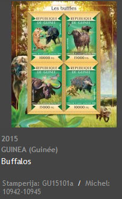
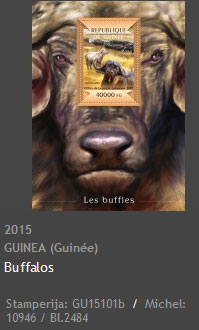
et les derniers ensembles (série + feuillet) disponibles sur le site Stamperija.
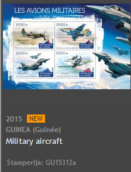
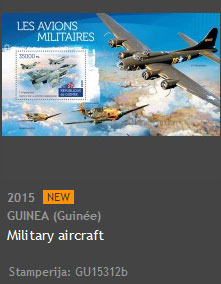
Nous pouvons voir que les premiers ont déjà des numéros de catalogue Michel, et que ces nombres sont énormes! Des propres chiffres de Stamperija nous pouvons facilement en déduire qu'en 2015, l'agent a produit jusqu'ici 212 ensembles, contenant 848 timbres et 212 feuillets. Un ensemble en étant vendu sur eBay pour environ US$ 20, un collectionneur qui aimerait avoir tous les ensembles aurait déboursé pour elles autours de US$ 4.000.
Des sujets inappropriés
On se demande pourquoi autant de peintures impressionnistes sont représentées sur des timbres des Iles Solomon. Et bien, Stamperija n'est pas le seul producteur de timbres qui n'ont rien en commun avec le pays même de l'émission. Regardons d'un coup d'œil deux feuillets souvenirs produits par le plus grand agent philatélique du monde, l' « Inter-Governamental Philatelic Corporation » (IGPC). « IGPC produit pratiquement la moitié des différents timbres émis chaque année mais a été critiqué pour des émissions inappropriées et excessives ». Lien
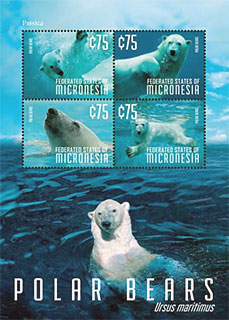
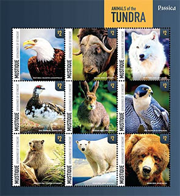
La création ci-avant, à gauche, présentée par IGPC à l'exposition Rossica en Russie, montre des ours polaires sur un feuillet souvenir émis par Micronesia, une autre petite région d'Océanie, comprenant des milliers de petites iles. Micronesia a un climat chaud tropical maritime, inadapté pour les ours polaires. Une autre production d'IGPC présentée aussi à l'exposition Rossica (à droite), a était émise par Mustique, une ile privée de Grenadines, peuplée de 500 à 1300 habitants. Le climat de cette ile des Caraïbes est tropical et pour cette raison il est impossible de trouver ces animaux exotiques dans le paysage. Comme le disent les russes, le papier supporte tout …
La surveillance exercée par quelques grandes organisations
En quelques mots et dans le meilleur des cas, ils ne font rien. C'est l'attitude typique de l' AIJP (les journalistes philatéliques), où aucun n'écrit au sujet des timbres interdits, ou de la FIP qui généralement ne s'inquiété pas pendant des années, a l'exception de la notable intervention du Secrétaire de la Commission de lutte contre les faux, mentionnée ci-avant.
L' « INTERGRAF » (Association Européenne des éditeurs de catalogues), qui regarde ailleurs. En attendant, des imprimeurs gagnent de l'argent en imprimant des quantités incroyables de timbres abusifs.
L' « ASCAT » (asscociations des editeurs de catalogues) qui liste ces timbres dans les catalogues internationaux des maisons éditant des catalogues (Yvert, Michel, Scott), en gagnent de l'argent avec elles.
La « WADP », qui, via l'équipe philatélique de l'UPU, liste ces timbres sur le WNS et gagne aussi de l'argent. Ainsi, ils violent le code d'éthique que l'UPU même l'a publié quelques années avant. Le seul travail positif de l'UPU est la publication des circulaires sur les timbres illégaux, même si ces circulaires ont un impact plutôt limité.
Conclusion
Ceux qui participent à la prolifération massive des timbres abusifs contribuent à les légitimer . Ceux qui ne font rien y contribuent aussi en s'abstenant de leur rôle de prévention et de protection auprès des collectionneurs de timbres les plus vulnérables.
Personne ne joue depuis des années son rôle et, en attendant, le nombre de membres d'association de collectionneurs de timbres est en chute libre.
Notre recommandation
Vous, les collectionneurs de timbres, vous vous retrouvez seuls, parce qu'aucune organisation philatélique ne s'occupe de vos intérêts. Tenez-vous en permanence bien informés, pour éviter toutes ces émissions illégales et abusives.
(*) Au sujet de l'auteur. Victor Manta est le fondateur et le Président actuel de la PWO. Il s'est beaucoup intéressé aux timbres thématiques et à la philatélie sur internet. Ces nombreux sites philatéliques ont reçu des prix dans les compétitions de sites philatéliques. Il est aussi un journaliste philatélique connu, qui a publié de nombreux articles sur l'internet et dans des revues imprimés.
Legal notice
• This is a piece of philatelic journalism. It is protected by the free speech and by the liberty of the press doctrines.
• Some very short excerpts or small images are sometimes used for illustration/teaching/criticism/commentary purposes only, to properly inform the worldwide readers.
• The fair use doctrine is fully observed. Each excerpt is properly attributed and respects the rights of the copyright owners.
• We will immediately correct any piece of information that will be proved false. When we use information provided on some official sites, we expect that it changes there (not just disappears due to the volatility of web pages) before we make changes on this site.
Links to related articles published on this site:
- WNS Circulars are not reliable
- WADP, WNS and the Illegal Postal Stamps. Balance Sheet Ten Years Later
- What is WNS Good For?
- No Help from the UPU
- Nigerian Stamp Sentinel
- Ten Lost WNS Years
|